1 背景知识
进程process p：
thread a
thread b
thread ab可共享进程p的数据：
- 全局变量
- 堆数据
- 函数里的静态变量
- 程序代码，任何线程都有权利读取并执行任何代码
- 打开的文件，A线程打开的文件可由B线程读写
thread的私有空间：
- 局部变量
- 栈
- 函数的参数
- TLS（线程局部存储）
- 寄存器
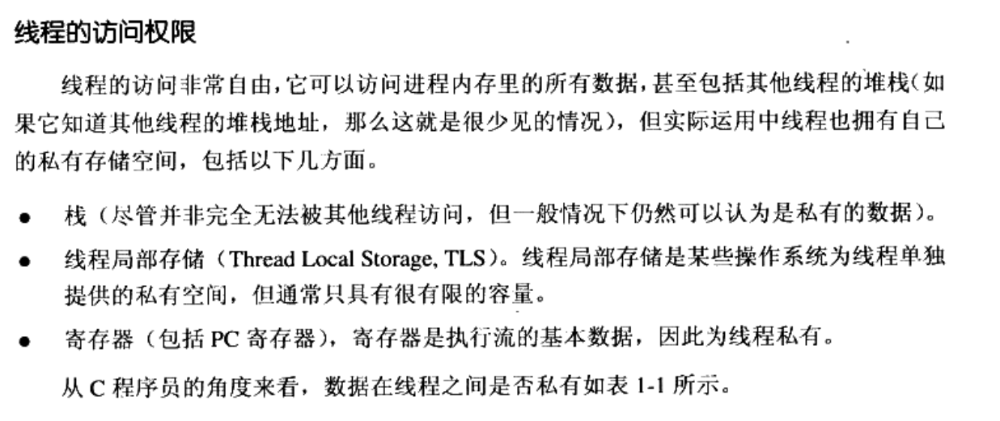
fork一个进程，linux采用写时复制。因此在只读的情况下fork进程特别快。
fork：产生本任务的镜像，exec启动新任务。
clone：产生新的线程，从指定位置开始执行，(可选的)共享当前进程的内存空间、文件等。实际效果上产生一个线程。
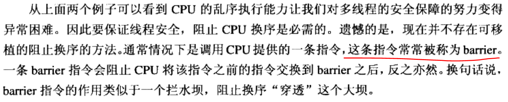
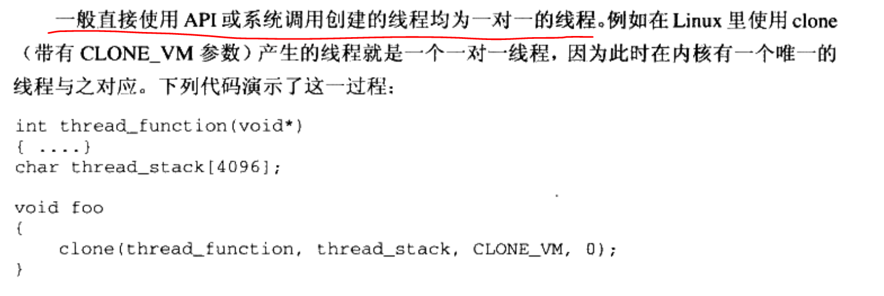
2 静态链接
gcc hello.c
a.out
上述过程分解为4个步骤：预处理、编译、汇编、链接
2.1 看不见的过程
2.1.1 预编译：
-
展开宏定义
-
替换include为文件内容，此处可能会递归调用
-
处理条件预编译指令，例如“#if”、“#ifdef”、“#elif”、“#else”、“endif”
-
删除所有的注释：“//”和“/* */”
-
添加行号和文件名标识，比如#2 “hello.c” 2, 以便于编译时产生调试用的行号信息以及用于编译时产生编译错误或者警告时能够显示行号
-
保留所有#pragma编译器指令
gcc -E hello.c -o hello.i

2.1.2 编译
把预处理完的文件—————(词法分析、语法分析、语义分析及优化后)—————>生成汇编代码
gcc -S hello.i -o hello.s
cat hello.s
.file "hello.c"
.text
.globl main
.type main, @function
main:
.LFB0:
.cfi_startproc
pushq %rbp
.cfi_def_cfa_offset 16
.cfi_offset 6, -16
movq %rsp, %rbp
.cfi_def_cfa_register 6
movl $0, %eax
popq %rbp
.cfi_def_cfa 7, 8
ret
.cfi_endproc
.LFE0:
.size main, .-main
.ident "GCC: (Ubuntu 7.5.0-3ubuntu1~18.04) 7.5.0"
.section .note.GNU-stack,"",@progbits
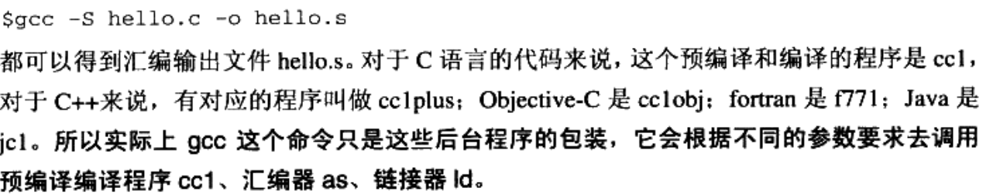
2.1.3 汇编
汇编代码S —–> 机器可执行的指令
gcc -c hello.s -o hello.o
2.1.4 链接
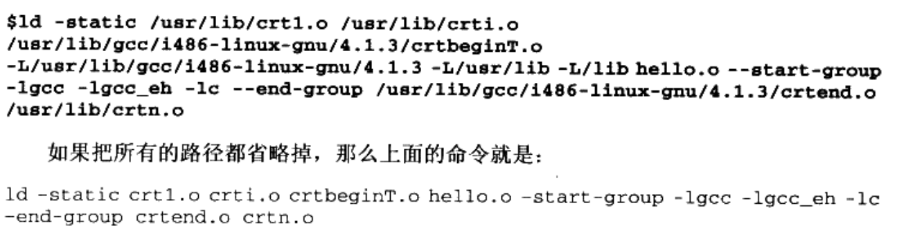
2.2 编译器
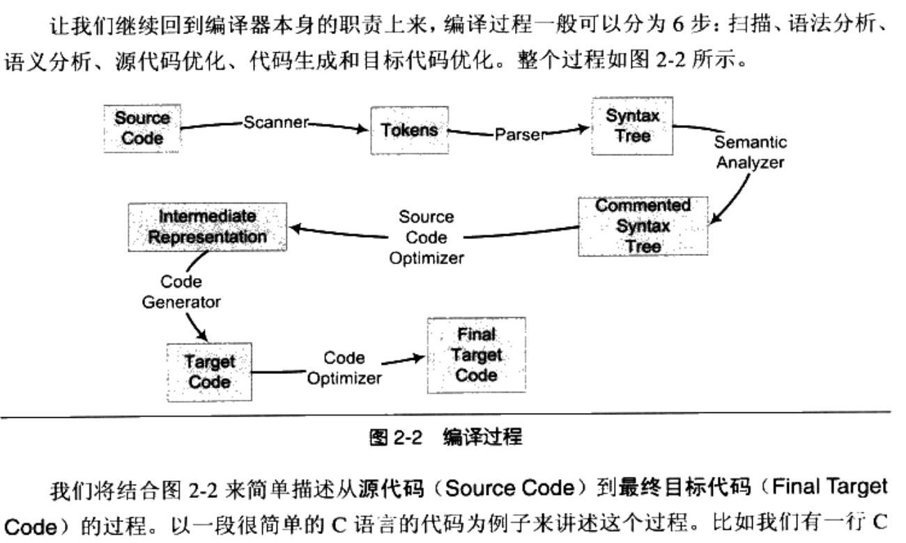
2.2.1 词法分析
使用有限状态机的算法将源代码字符序列分割成一系列token。
词法分析产生的记号一般可分为以下几类：
关键字、标识符、字面量（数字、字符串）、特殊符号（+、=）
词法扫描现有工具：lex。根据词法规则将输入字符串分割成一个个记号。
C语言宏替换和文件包含等工作一般交给一个独立的预处理器
2.2.2 语法分析
语法分析器产生语法树。分析过程采用上下文无关语法的分析手段。
语法分析现有工具：yacc。根据语法规则进行解析构造一颗语法树
2.2.3 语义分析
静态语义：编译期就可以确定的语义。通常包括声明和类型的匹配，类型的转换。
动态语义：程序执行时才能确定的语义
编译器分析静态语义，比如一个浮点数赋值给整型表达式时，隐含包含了一个浮点型到整型的转换过程。类型转换是否合法。经过语义分析阶段后语法树表达式都被标识了类型。如果有些类型需要语法转换，则语义分析程序会在语法树中插入相应的转换节点。
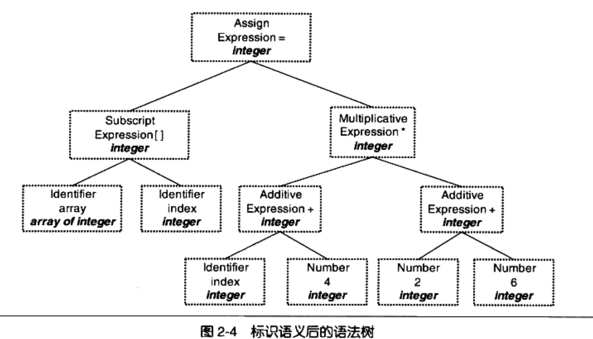
2.2.4 链接
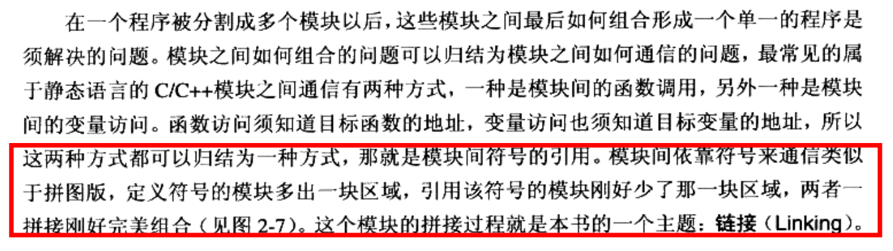
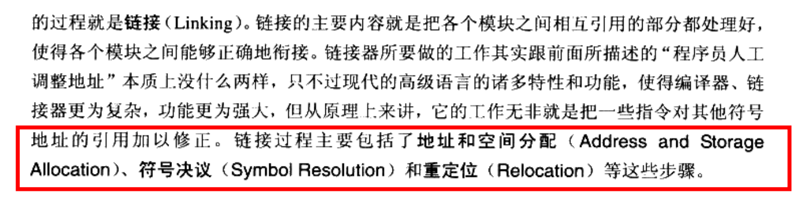
3 可执行文件
// -h打印各个段的基本信息
objdump -h hello.o
hello.o: file format elf64-x86-64
Sections:
Idx Name Size VMA LMA File off Algn
0 .text 00000017 0000000000000000 0000000000000000 00000040 2**0
CONTENTS, ALLOC, LOAD, RELOC, READONLY, CODE
1 .data 00000000 0000000000000000 0000000000000000 00000057 2**0
CONTENTS, ALLOC, LOAD, DATA
2 .bss 00000000 0000000000000000 0000000000000000 00000057 2**0
ALLOC
3 .rodata 0000000c 0000000000000000 0000000000000000 00000057 2**0
CONTENTS, ALLOC, LOAD, READONLY, DATA
4 .comment 0000002a 0000000000000000 0000000000000000 00000063 2**0
CONTENTS, READONLY
5 .note.GNU-stack 00000000 0000000000000000 0000000000000000 0000008d 2**0
CONTENTS, READONLY
6 .eh_frame 00000038 0000000000000000 0000000000000000 00000090 2**3
CONTENTS, ALLOC, LOAD, RELOC, READONLY, DATA
// -x打印更详细的内容
objdump -x hello.o
hello.o: file format elf64-x86-64
hello.o
architecture: i386:x86-64, flags 0x00000011:
HAS_RELOC, HAS_SYMS
start address 0x0000000000000000
Sections:
Idx Name Size VMA LMA File off Algn
0 .text 00000017 0000000000000000 0000000000000000 00000040 2**0
CONTENTS, ALLOC, LOAD, RELOC, READONLY, CODE
1 .data 00000000 0000000000000000 0000000000000000 00000057 2**0
CONTENTS, ALLOC, LOAD, DATA
2 .bss 00000000 0000000000000000 0000000000000000 00000057 2**0
ALLOC
3 .rodata 0000000c 0000000000000000 0000000000000000 00000057 2**0
CONTENTS, ALLOC, LOAD, READONLY, DATA
4 .comment 0000002a 0000000000000000 0000000000000000 00000063 2**0
CONTENTS, READONLY
5 .note.GNU-stack 00000000 0000000000000000 0000000000000000 0000008d 2**0
CONTENTS, READONLY
6 .eh_frame 00000038 0000000000000000 0000000000000000 00000090 2**3
CONTENTS, ALLOC, LOAD, RELOC, READONLY, DATA
SYMBOL TABLE:
0000000000000000 l df *ABS* 0000000000000000 hello.c
0000000000000000 l d .text 0000000000000000 .text
0000000000000000 l d .data 0000000000000000 .data
0000000000000000 l d .bss 0000000000000000 .bss
0000000000000000 l d .rodata 0000000000000000 .rodata
0000000000000000 l d .note.GNU-stack 0000000000000000 .note.GNU-stack
0000000000000000 l d .eh_frame 0000000000000000 .eh_frame
0000000000000000 l d .comment 0000000000000000 .comment
0000000000000000 g F .text 0000000000000017 main
0000000000000000 *UND* 0000000000000000 _GLOBAL_OFFSET_TABLE_
0000000000000000 *UND* 0000000000000000 puts
RELOCATION RECORDS FOR [.text]:
OFFSET TYPE VALUE
0000000000000007 R_X86_64_PC32 .rodata-0x0000000000000004
000000000000000c R_X86_64_PLT32 puts-0x0000000000000004
RELOCATION RECORDS FOR [.eh_frame]:
OFFSET TYPE VALUE
0000000000000020 R_X86_64_PC32 .text
// 以十六进制打印hello.o所有段的内容
objdump -s hello.o
hello.o: file format elf64-x86-64
Contents of section .text:
0000 554889e5 488d3d00 000000e8 00000000 UH..H.=.........
0010 b8000000 005dc3 .....].
Contents of section .rodata:
0000 68656c6c 6f20776f 726c6400 hello world.
Contents of section .comment:
0000 00474343 3a202855 62756e74 7520372e .GCC: (Ubuntu 7.
0010 352e302d 33756275 6e747531 7e31382e 5.0-3ubuntu1~18.
0020 30342920 372e352e 3000 04) 7.5.0.
Contents of section .eh_frame:
0000 14000000 00000000 017a5200 01781001 .........zR..x..
0010 1b0c0708 90010000 1c000000 1c000000 ................
0020 00000000 17000000 00410e10 8602430d .........A....C.
0030 06520c07 08000000 .R......
// 以十六进制打印hello.o所有段的内容。且“-d”对内容进行反汇编
objdump -s -d hello.o
hello.o: file format elf64-x86-64
Contents of section .text:
0000 554889e5 488d3d00 000000e8 00000000 UH..H.=.........
0010 b8000000 005dc3 .....].
Contents of section .rodata:
0000 68656c6c 6f20776f 726c6400 hello world.
Contents of section .comment:
0000 00474343 3a202855 62756e74 7520372e .GCC: (Ubuntu 7.
0010 352e302d 33756275 6e747531 7e31382e 5.0-3ubuntu1~18.
0020 30342920 372e352e 3000 04) 7.5.0.
Contents of section .eh_frame:
0000 14000000 00000000 017a5200 01781001 .........zR..x..
0010 1b0c0708 90010000 1c000000 1c000000 ................
0020 00000000 17000000 00410e10 8602430d .........A....C.
0030 06520c07 08000000 .R......
Disassembly of section .text:
0000000000000000 <main>: // 左边一列偏移量。 中间十六进制表示，右边ascii码表示
0: 55 push %rbp
1: 48 89 e5 mov %rsp,%rbp
4: 48 8d 3d 00 00 00 00 lea 0x0(%rip),%rdi # b <main+0xb>
b: e8 00 00 00 00 callq 10 <main+0x10>
10: b8 00 00 00 00 mov $0x0,%eax
15: 5d pop %rbp
16: c3 retq
printf里的字符串为常量，放到rodata里，rodata 0000000c 可以看到该字符串12字节长度。
rodata：只读数据。一般用来存储全局const常量或者字符串常量。
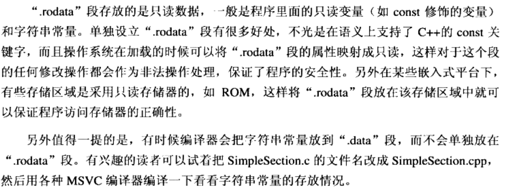
3.4 ELF文件结构描述
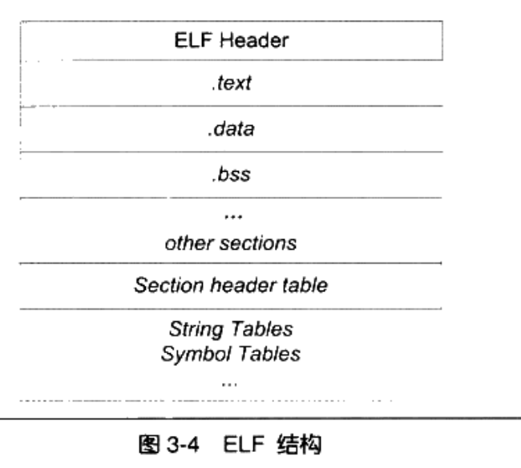
3.4.1 文件头
readelf -h hello.o
ELF Header:
Magic: 7f 45 4c 46 02 01 01 00 00 00 00 00 00 00 00 00
Class: ELF64
Data: 2's complement, little endian // 数据存储方式
Version: 1 (current)
OS/ABI: UNIX - System V
ABI Version: 0
Type: REL (Relocatable file)
Machine: Advanced Micro Devices X86-64
Version: 0x1
Entry point address: 0x0
Start of program headers: 0 (bytes into file)
Start of section headers: 760 (bytes into file)
Flags: 0x0
Size of this header: 64 (bytes)
Size of program headers: 0 (bytes)
Number of program headers: 0
Size of section headers: 64 (bytes)
Number of section headers: 13
Section header string table index: 12
3.4.2 符号
// 显示符号表信息。变量和函数都是符号
readelf -s hello.o
Symbol table '.symtab' contains 13 entries:
Num: Value Size Type Bind Vis Ndx Name
0: 0000000000000000 0 NOTYPE LOCAL DEFAULT UND
1: 0000000000000000 0 FILE LOCAL DEFAULT ABS hello.c
2: 0000000000000000 0 SECTION LOCAL DEFAULT 1
3: 0000000000000000 0 SECTION LOCAL DEFAULT 3
4: 0000000000000000 0 SECTION LOCAL DEFAULT 4
5: 0000000000000000 0 SECTION LOCAL DEFAULT 5
6: 0000000000000000 0 SECTION LOCAL DEFAULT 7
7: 0000000000000000 0 SECTION LOCAL DEFAULT 8
8: 0000000000000000 0 SECTION LOCAL DEFAULT 6
9: 0000000000000000 4 OBJECT GLOBAL DEFAULT 3 global_init_var
10: 0000000000000000 23 FUNC GLOBAL DEFAULT 1 main
11: 0000000000000000 0 NOTYPE GLOBAL DEFAULT UND _GLOBAL_OFFSET_TABLE_
12: 0000000000000000 0 NOTYPE GLOBAL DEFAULT UND puts
6 可执行文件的装载
静态编译成elf文件，然后查看信息
gcc -static hello.o -o hello.elf
readelf -S hello.elf
There are 33 section headers, starting at offset 0xcdda0:
Section Headers:
[Nr] Name Type Address Offset
Size EntSize Flags Link Info Align
[ 0] NULL 0000000000000000 00000000
0000000000000000 0000000000000000 0 0 0
[ 1] .note.ABI-tag NOTE 0000000000400190 00000190
0000000000000020 0000000000000000 A 0 0 4
[ 2] .note.gnu.build-i NOTE 00000000004001b0 000001b0
0000000000000024 0000000000000000 A 0 0 4
readelf: Warning: [ 3]: Link field (0) should index a symtab section.
[ 3] .rela.plt RELA 00000000004001d8 000001d8
0000000000000228 0000000000000018 AI 0 20 8
[ 4] .init PROGBITS 0000000000400400 00000400
0000000000000017 0000000000000000 AX 0 0 4
[ 5] .plt PROGBITS 0000000000400418 00000418
00000000000000b8 0000000000000000 AX 0 0 8
[ 6] .text PROGBITS 00000000004004d0 000004d0
000000000008f640 0000000000000000 AX 0 0 16
[ 7] __libc_freeres_fn PROGBITS 000000000048fb10 0008fb10
0000000000001523 0000000000000000 AX 0 0 16
[ 8] __libc_thread_fre PROGBITS 0000000000491040 00091040
00000000000010eb 0000000000000000 AX 0 0 16
[ 9] .fini PROGBITS 000000000049212c 0009212c
0000000000000009 0000000000000000 AX 0 0 4
[10] .rodata PROGBITS 0000000000492140 00092140
000000000001926c 0000000000000000 A 0 0 32
[11] .stapsdt.base PROGBITS 00000000004ab3ac 000ab3ac
0000000000000001 0000000000000000 A 0 0 1
[12] .eh_frame PROGBITS 00000000004ab3b0 000ab3b0
000000000000a5e8 0000000000000000 A 0 0 8
[13] .gcc_except_table PROGBITS 00000000004b5998 000b5998
000000000000009e 0000000000000000 A 0 0 1
[14] .tdata PROGBITS 00000000006b6120 000b6120
0000000000000020 0000000000000000 WAT 0 0 8
[15] .tbss NOBITS 00000000006b6140 000b6140
0000000000000040 0000000000000000 WAT 0 0 8
[16] .init_array INIT_ARRAY 00000000006b6140 000b6140
0000000000000010 0000000000000008 WA 0 0 8
[17] .fini_array FINI_ARRAY 00000000006b6150 000b6150
0000000000000010 0000000000000008 WA 0 0 8
[18] .data.rel.ro PROGBITS 00000000006b6160 000b6160
0000000000002d94 0000000000000000 WA 0 0 32
[19] .got PROGBITS 00000000006b8ef8 000b8ef8
00000000000000f8 0000000000000000 WA 0 0 8
[20] .got.plt PROGBITS 00000000006b9000 000b9000
00000000000000d0 0000000000000008 WA 0 0 8
[21] .data PROGBITS 00000000006b90e0 000b90e0
0000000000001af0 0000000000000000 WA 0 0 32
[22] __libc_subfreeres PROGBITS 00000000006babd0 000babd0
0000000000000048 0000000000000000 WA 0 0 8
[23] __libc_IO_vtables PROGBITS 00000000006bac20 000bac20
00000000000006a8 0000000000000000 WA 0 0 32
[24] __libc_atexit PROGBITS 00000000006bb2c8 000bb2c8
0000000000000008 0000000000000000 WA 0 0 8
[25] __libc_thread_sub PROGBITS 00000000006bb2d0 000bb2d0
0000000000000008 0000000000000000 WA 0 0 8
[26] .bss NOBITS 00000000006bb2e0 000bb2d8
00000000000016f8 0000000000000000 WA 0 0 32
[27] __libc_freeres_pt NOBITS 00000000006bc9d8 000bb2d8
0000000000000028 0000000000000000 WA 0 0 8
[28] .comment PROGBITS 0000000000000000 000bb2d8
0000000000000029 0000000000000001 MS 0 0 1
[29] .note.stapsdt NOTE 0000000000000000 000bb304
0000000000001638 0000000000000000 0 0 4
[30] .symtab SYMTAB 0000000000000000 000bc940
000000000000a9b0 0000000000000018 31 679 8
[31] .strtab STRTAB 0000000000000000 000c72f0
0000000000006938 0000000000000000 0 0 1
[32] .shstrtab STRTAB 0000000000000000 000cdc28
0000000000000176 0000000000000000 0 0 1
Key to Flags:
W (write), A (alloc), X (execute), M (merge), S (strings), I (info),
L (link order), O (extra OS processing required), G (group), T (TLS),
C (compressed), x (unknown), o (OS specific), E (exclude),
l (large), p (processor specific)
readelf -l hello.elf
Elf file type is EXEC (Executable file)
Entry point 0x400a50
There are 6 program headers, starting at offset 64
Program Headers:
Type Offset VirtAddr PhysAddr
FileSiz MemSiz Flags Align
LOAD 0x0000000000000000 0x0000000000400000 0x0000000000400000
0x00000000000b5a36 0x00000000000b5a36 R E 0x200000
LOAD 0x00000000000b6120 0x00000000006b6120 0x00000000006b6120
0x00000000000051b8 0x00000000000068e0 RW 0x200000
NOTE 0x0000000000000190 0x0000000000400190 0x0000000000400190
0x0000000000000044 0x0000000000000044 R 0x4
TLS 0x00000000000b6120 0x00000000006b6120 0x00000000006b6120
0x0000000000000020 0x0000000000000060 R 0x8
GNU_STACK 0x0000000000000000 0x0000000000000000 0x0000000000000000
0x0000000000000000 0x0000000000000000 RW 0x10
GNU_RELRO 0x00000000000b6120 0x00000000006b6120 0x00000000006b6120
0x0000000000002ee0 0x0000000000002ee0 R 0x1
Section to Segment mapping:
Segment Sections...
00 .note.ABI-tag .note.gnu.build-id .rela.plt .init .plt .text __libc_freeres_fn __libc_thread_freeres_fn .fini .rodata .stapsdt.base .eh_frame .gcc_except_table
01 .tdata .init_array .fini_array .data.rel.ro .got .got.plt .data __libc_subfreeres __libc_IO_vtables __libc_atexit __libc_thread_subfreeres .bss __libc_freeres_ptrs
02 .note.ABI-tag .note.gnu.build-id
03 .tdata .tbss
04
05 .tdata .init_array .fini_array .data.rel.ro .got
动态链接：运行时才将用到的lib so进行链接
静态链接：将所有模块使用的文件都链接到一起，形成一个可执行文件
动态链接好处：兼容性和扩展性
动态链接坏处：模块更新后，旧的模块接口和新模块接口不兼容则容易出现程序无法跑的情况
动态链接文件：dynamic shared objects。so文件
windows 动态链接文件：dll
判断dso是否为PIC文件
gcc -fPIC hello.c -o hello.so
readelf -d hello.so | grep TEXTREL //无输出则是PIC文件。PIC不包含段重定位表
10 栈
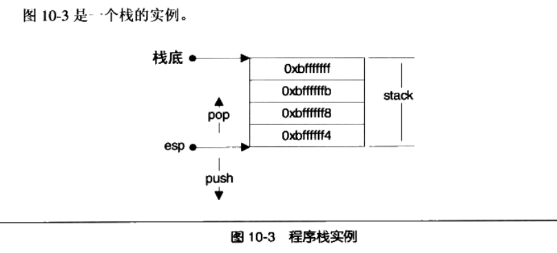
12 系统调用与API
cpu规格：
100MHZ： 每1s CPU可执行100000000个指令周期
1000MHZ: 每1s CPU可执行1000个指令周期
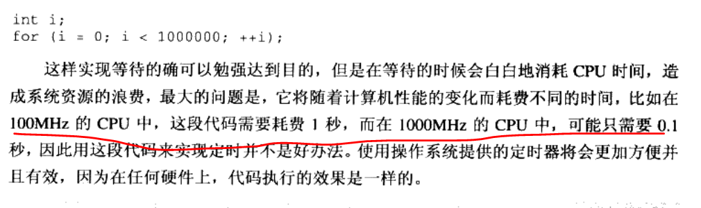